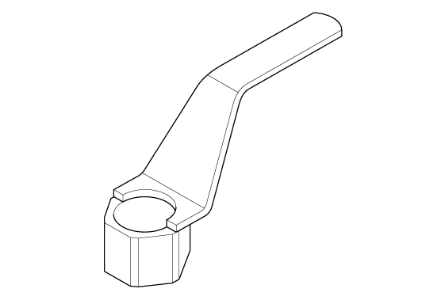

LEMON Manuals
: Even more car manuals for everyone: 1960-2025
Home
>>
Honda
>>
2016
>>
Civic LX, 4D Sedan, Automatic CVT Trans
>>
Repair and Diagnosis
>>
Engine Mechanical
>>
Fuel System
>>
Engine Control / Engine Mechanical - Service Information
>>
Removal and Installation
>>
Crankshaft Pulley Removal and Installation (K20C2)
>>
Notes
Crankshaft Pulley Removal and Installation (K20C2): Notes
Special Tools Required
Image
Description/Tool Number
Courtesy of HONDA, U.S.A., INC.
Holder Handle 07JAB-001020B

Courtesy of HONDA, U.S.A., INC.
Crankshaft Pulley Holder 07AAB-RJAA100
Courtesy of HONDA, U.S.A., INC.
Socket, 19 mm 07JAA-001020A or equivalent
 Courtesy of HONDA, U.S.A., INC.
Courtesy of HONDA, U.S.A., INC. Courtesy of HONDA, U.S.A., INC.
Courtesy of HONDA, U.S.A., INC.